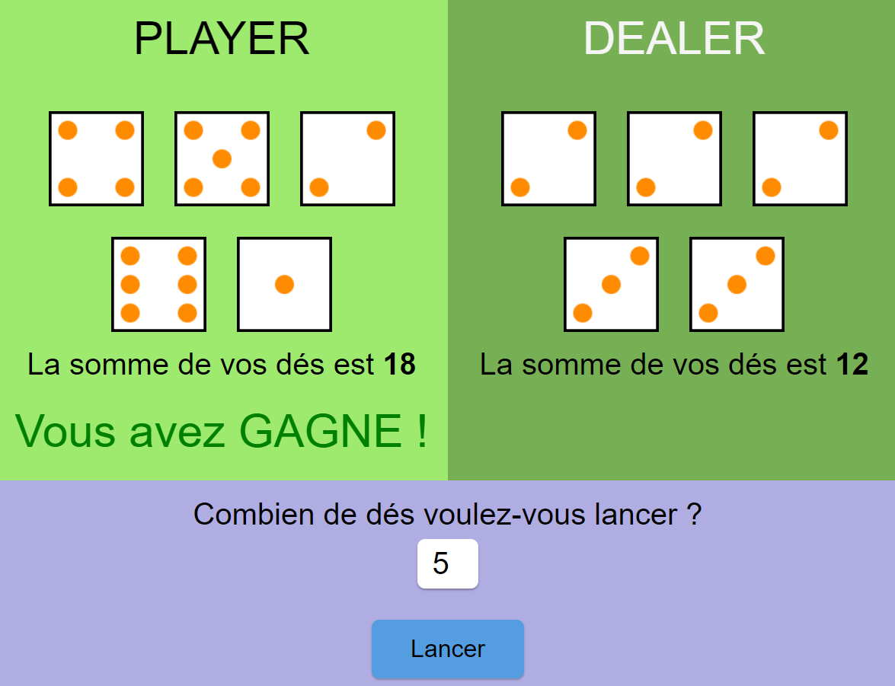
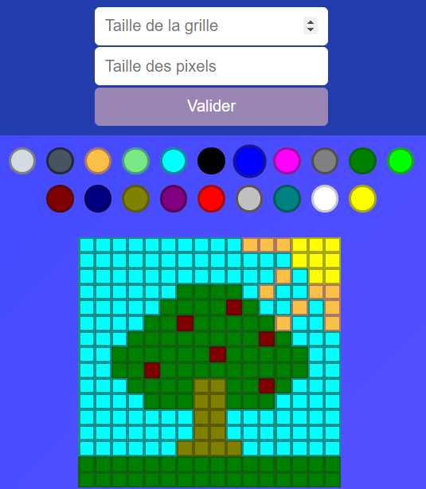

OLDUVAÏ
Cette saison est dédiée à JavaScript et ses possibilités d'animations
d'une page web.
Après avoir vu les variables, les opérations logiques et les
conditions qui sont la base de l'algorithmie, nous attaquons avec les
boucles, les tableaux et les fonctions... et le cerveau se met en
ébulition 🤯 !
Les premières interactions avec une page web sont maintenant possibles
et nous pouvons créer notre première petite application dynamique sous
forme de
mini jeu, grâce à la manipulation du DOM (interface des pages web) 💥💪 !
Nous continuons les jours suivants à découvrir la création d'éléments via JS, l'ajout et la suppression de ces élements dans le DOM. Autre notion et pas des moindres pour l'animation, c'est le rattachement d'évèvement : par exemple déclencher une action suite à un clic de souris sur un élément. Couplés aux animations CSS, cela commence à donner des choses assez cool ✌️ !
Cette saison donne aussi lieu à une journée de pair programming 🧑🤝🧑, avec un gros projet reprenant toutes les notions JS et d'interaction avec le DOM que nous avons vu jusque là. Elle aboutit a un petit projet vraiment sympa de pixel art.
